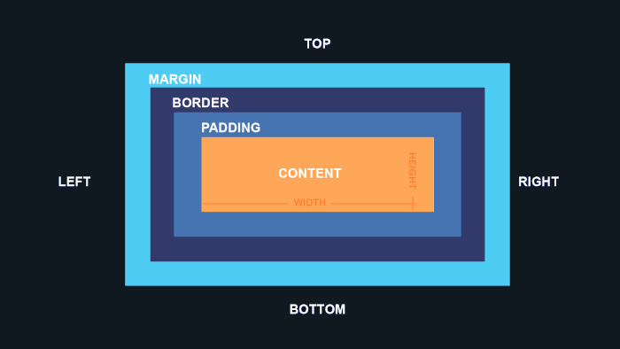

Box Model - O que é?
O Box Model é a forma como o CSS representa visualmente todos os elementos HTML. Cada elemento é visto como uma caixa retangular composta por quatro camadas principais.
Estrutura do Box Model (de fora para dentro)
Margin
- Espaço externo da caixa
- Separa o elemento de outros elementos
- Exemplo:
margin: 10px;
A propriedade margin no CSS é usada para criar espaçamento externo ao redor de elementos HTML. Ela define o espaço entre a borda de um elemento e os elementos ao seu redor, ajudando a controlar o layout e o posicionamento dos elementos na página.
Border
- Linha que envolve o padding e o conteúdo
- Pode ter cor, estilo e espessura
- Exemplo:
border: 2px solid black;
A propriedade border no CSS é usada para criar bordas ao redor de elementos HTML. Ela permite definir a largura, estilo e cor da borda de um elemento, ajudando tanto no design visual quanto na separação de seções da página.
Estilos de borda mais comuns
- solid → linha sólida
- dashed → linha tracejada
- dotted → linha pontilhada
- double → duas linhas sólidas
- none → sem borda
- groove, ridge, inset, outset → estilos com efeitos 3D
Bordas arredondadas com border-radius. Essa propriedade arredonda os cantos do elemento.
border-radius: 10px;
Padding
- Espaço interno entre o conteúdo e a borda
- Aumenta o “respiro” dentro da caixa
- Exemplo:
padding: 20px;
Content
- O conteúdo real (texto, imagem, etc)
- Exemplo:
width: 200px; height: 100px;
Dica importante: box-sizing
Por padrão, o tamanho total da caixa = content + padding + border
Se quiser que o width e height incluam tudo (padding + border), use:
box-sizing: border-box;